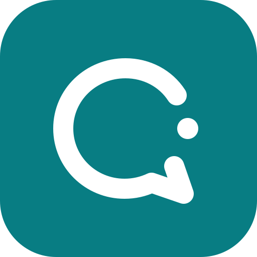
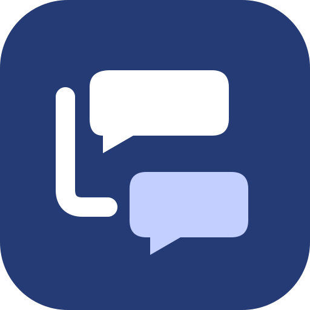

OR Ligature
An O and R share one continuous silhouette. The most direct, ownable identity for OpenRelay.
App icon SVG · Standalone mark SVG · PNGFour original vector directions. Recommendation: OR Ligature.
View comparison with monochrome and actual-size previews
An O and R share one continuous silhouette. The most direct, ownable identity for OpenRelay.
App icon SVG · Standalone mark SVG · PNG
A broken conversation ring invites you into the thread. Friendly, calm, and easy to recognize as a compact mark.
App icon SVG · Standalone mark SVG · PNGOpposing arrows express passing a conversation along. Energetic and clear, with a warmer visual personality.
App icon SVG · Standalone mark SVG · PNG
Two reply bubbles and a rail make nested discussion visible. The closest connection to the existing Open Thread icon.
App icon SVG · Standalone mark SVG · PNG